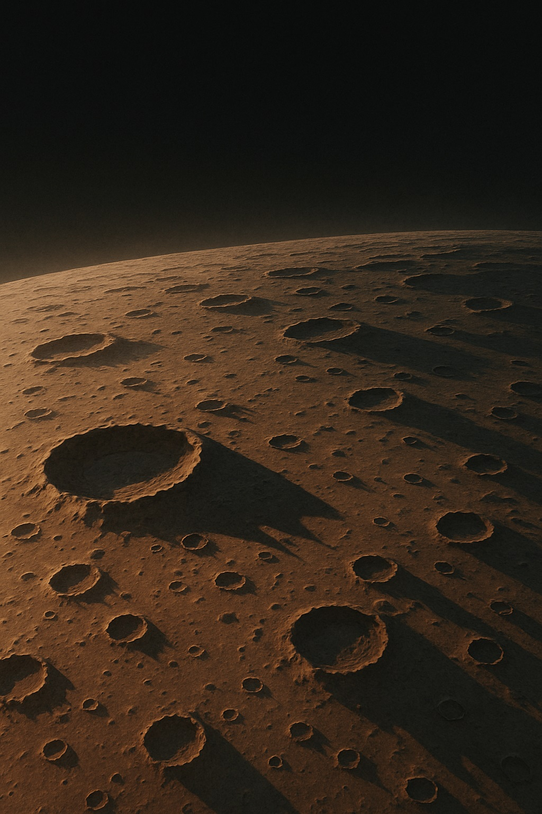
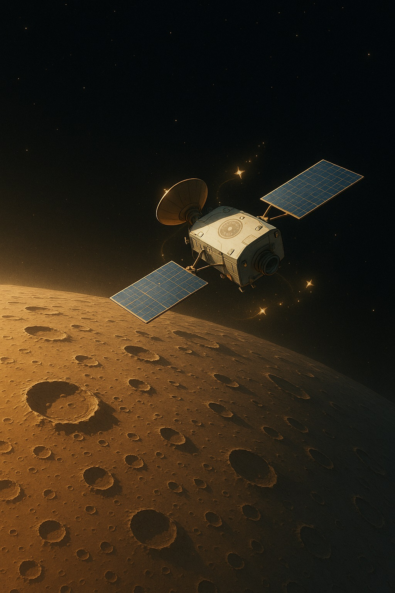

💧セーラーマーキュリーと学ぶ、水星のものがたり
〜冷静と情熱をあわせ持つ、小さな惑星のものがたり〜

水星は、太陽に一番近い小さな惑星だよ。
ねえ、エミリー
今日は「セーラーマーキュリー」の名前にもなっている、“**水星**”について冒険しようよ。
水星は太陽のすぐそばをくるくる回る、小さくて速い惑星。まるで静かな知性と熱い情熱を秘めた水野亜美ちゃんのように、ふたつの顔を持っているんだ。
🌟 水星のふしぎポイント
極端な温度差が水星の大きな特徴だよ。
- 最速の公転速度：秒速約47.4kmで、１周わずか88日。まるで全力疾走するヒーローみたい！
- 極端な温度差：昼は約430℃、夜は-180℃、その差は610℃にもなるんだ。
- 大気ほぼゼロ：空気がないから音は伝わらず、静寂の世界。
- クレーターに覆われた表面：隕石衝突の跡がそのまま残り、月に似た“あばた顔”。
- カロリス盆地：直径約1350kmの巨大クレーターは、火星のオリンポス山以上の規模。
- リンクル・リッジ：収縮でできた巨大な“シワ”が表面を縦断。
- 氷のかくれが：永久影のクレーター底に、ひっそり氷が眠っているかも。
セーラーマーキュリー：「知識の水を得よ！」
水星は冷静で深い知恵の象徴。その知的な力と、極端な環境の熱さをあわせ持つ星なんだよ。
水星は冷静で深い知恵の象徴。その知的な力と、極端な環境の熱さをあわせ持つ星なんだよ。
🔭 探査機メッセンジャーの挑戦
メッセンジャー探査機が水星の秘密をたくさん教えてくれたよ！
NASAの探査機「**メッセンジャー**」は2011年から水星を4年間周回し、未知の表情を次々に明らかにしたよ。影の中の氷や、くぼみに積もる微細な塵まで、私たちの想像を超える情報を届けてくれたんだ。
さらに日本・欧州共同の「**ベピ・コロンボ**」では、2025年に到着してさらに詳しい観測が続く予定。水星が持つ“知の水滴”を、一滴残さず集めに行くんだね。
✨ 学んだことを胸に
水星は、知性と情熱が交錯する不思議な星。昼の厳しい熱、夜の凍える寒さ、その両極を静かに受け入れる佇まいは、水野亜美ちゃんのクールさと優しさを思わせるよね。
次は火星で“情熱”を感じ、その次は木星で“守護”の力を学ぼう。Dear Emilyの宇宙探検は、まだまだ続くよ！
今日の宇宙の神秘 - Astronomy Picture of the Day
コンテンツを読み込み中...